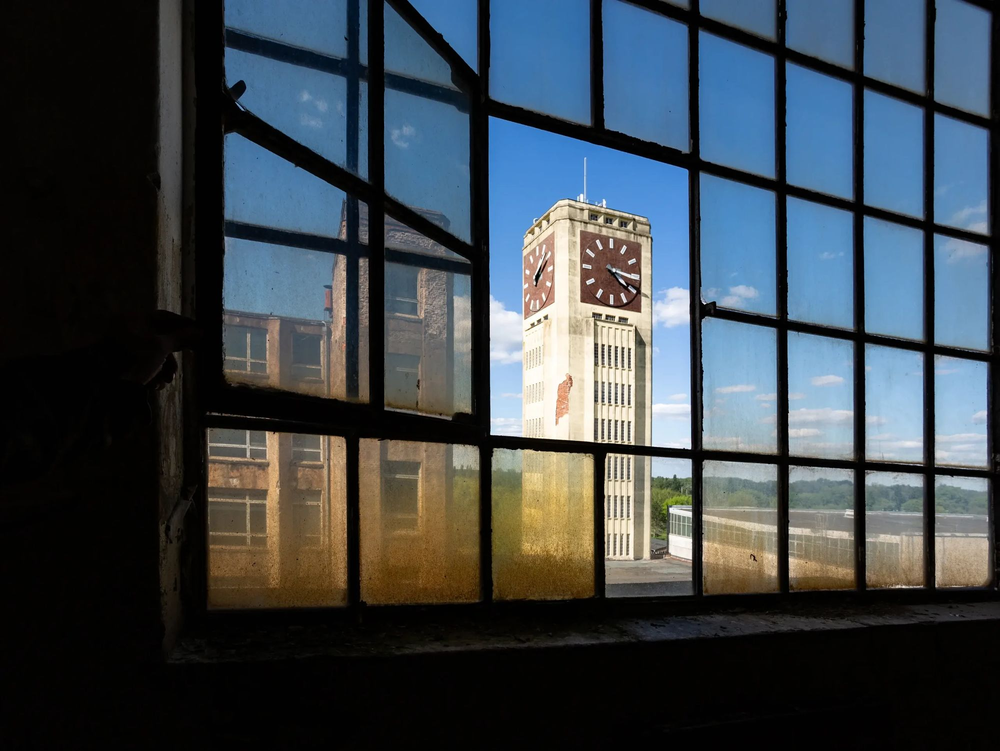
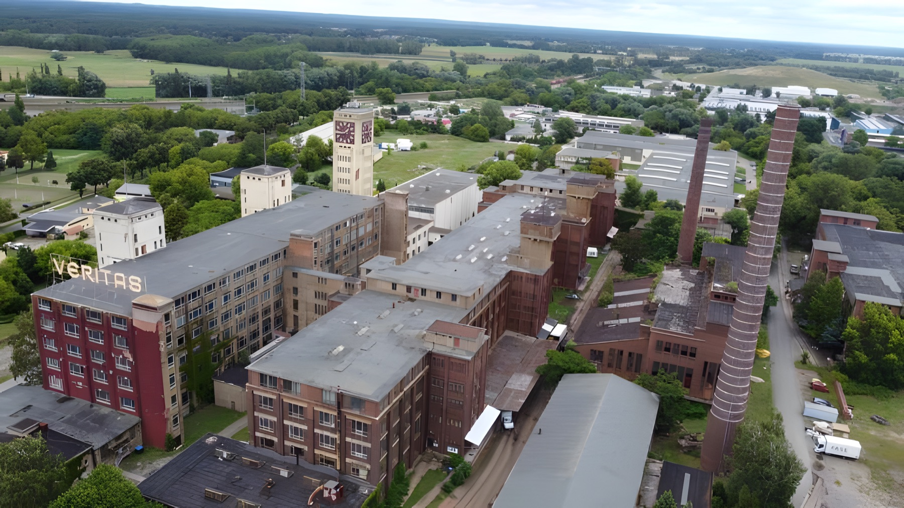
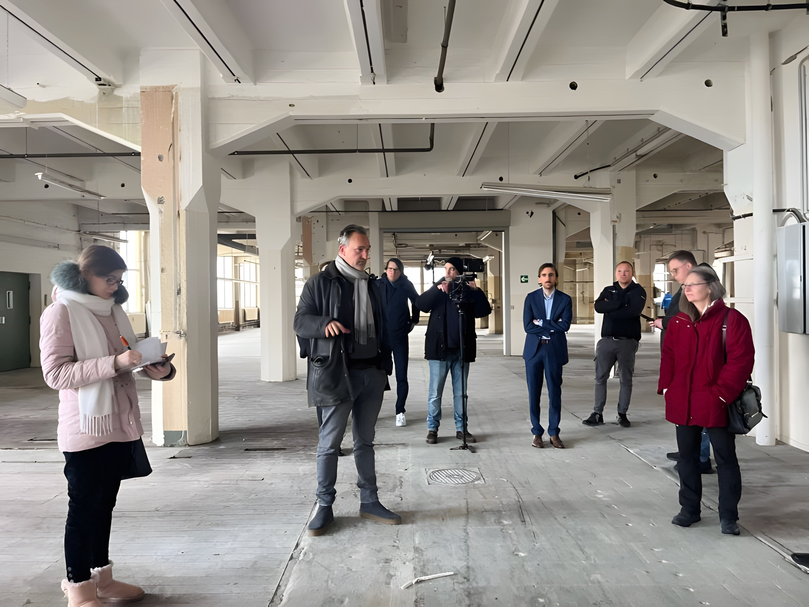
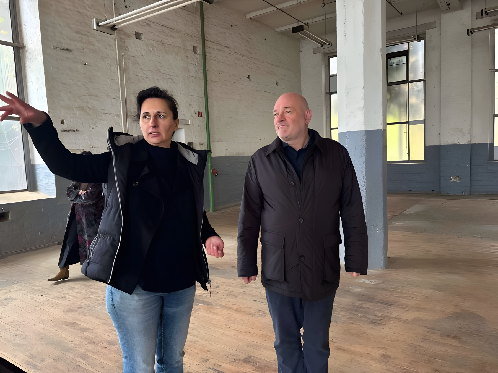
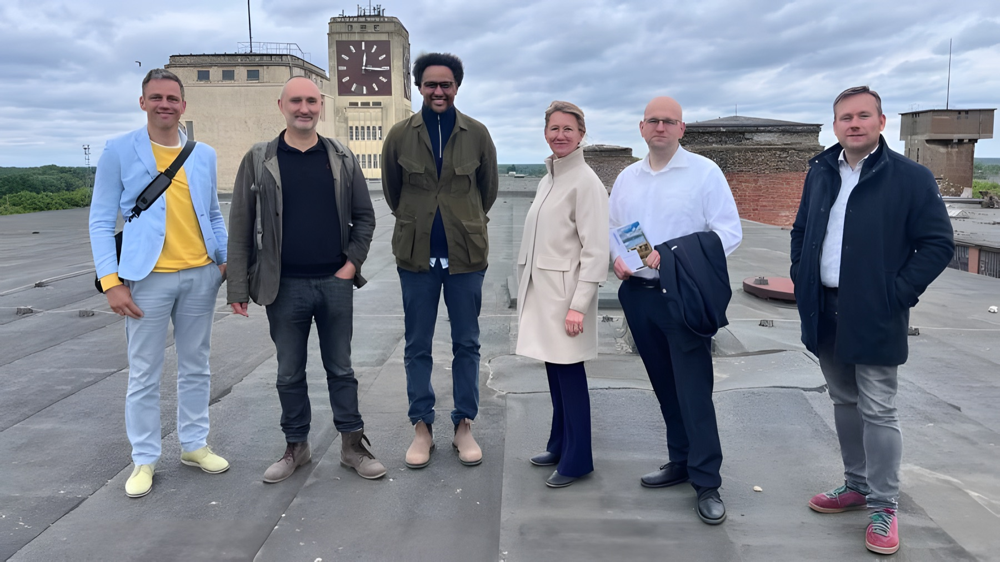
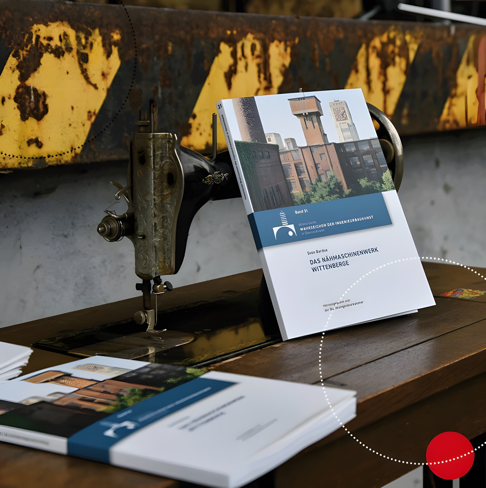

BBIK Award Article & History
The Wittenberge sewing machine factory is the first factory to be awarded the title of Historic Landmark of Civil Engineering in Germany, celebrating its rich history and sustainability.

News
The Wittenberge sewing machine factory is the first factory to be awarded the title of Historic Landmark of Civil Engineering in Germany, celebrating its rich history and sustainability.

Approved in September 2023 by The Budget Committee of the German Bundestag, the funding commitment is an important signal for the further development of the area, which is unique even beyond Wittenberge.
Produced by Hello Studio W, this mini-doc was created to honor the historical landmark of the Singer Sewing Machine factory. In between aerial views of the factory and archival footage, we hear from local experts Christian Von Hagen and Sven Bardua.
In Wittenberge, an old industrial site is set to be brought back to life over the coming years. Another hurdle has now been cleared.



The former Singer sewing machine factory in Wittenberge was honored with the Historical Landmark of Civil Engineering in Germany Award in October 2024.

Sven Bardua wrote a historical review of the innovative civil engineering methods used in the construction of the Singer Sewing Machine Factory. His research offers new insights into the history of the Singer Company, Wittenberge, and early architecture of the 20th century.